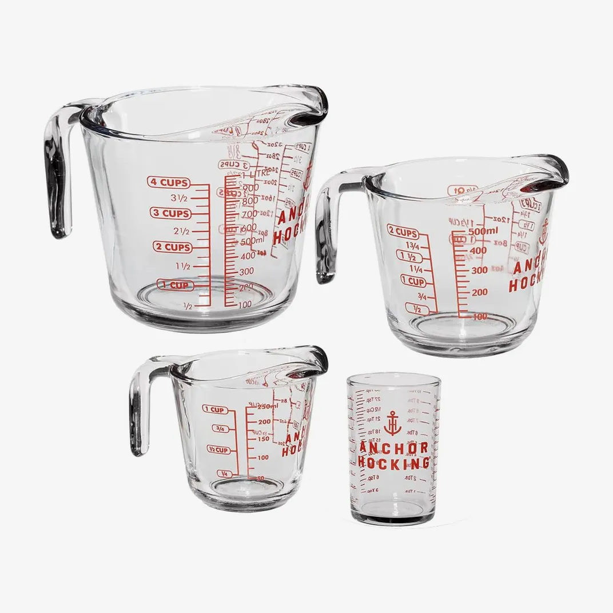
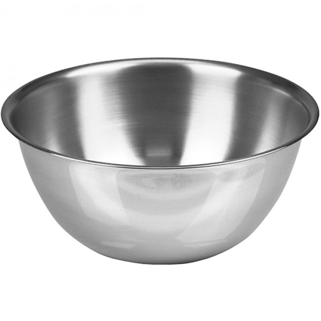
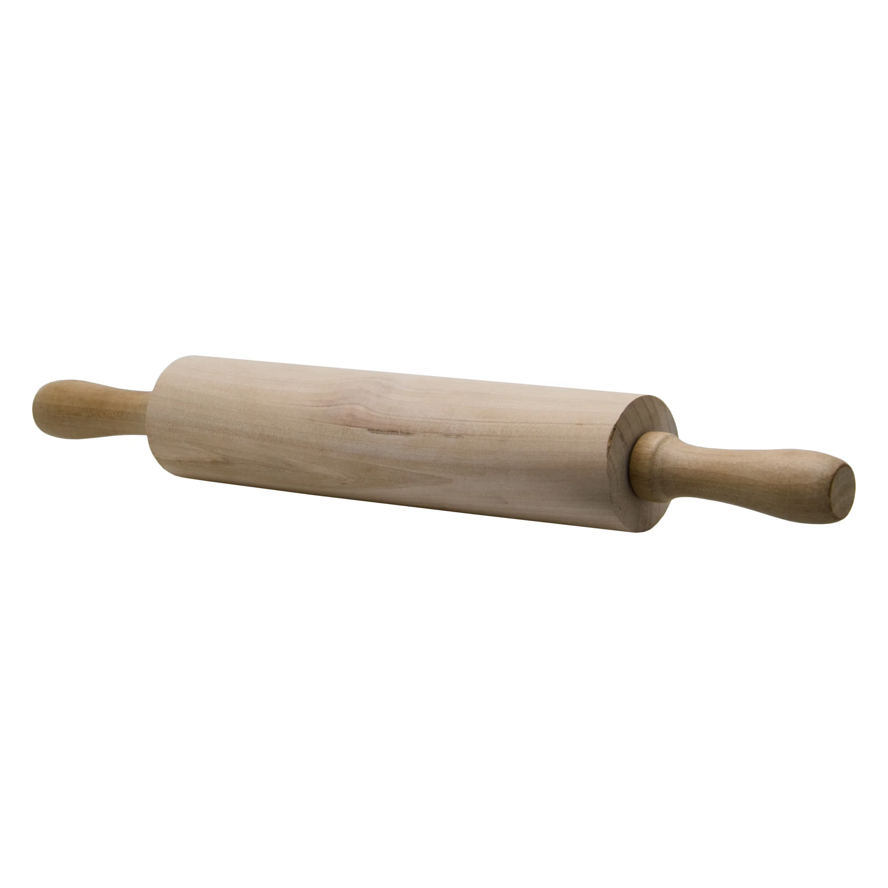
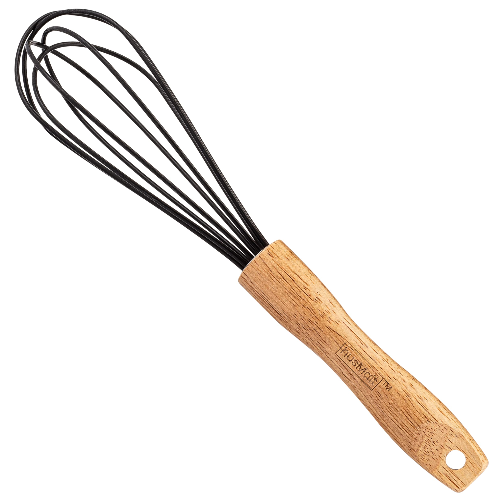

See it.Bake it.Love it
Welcome to our tutorials where we show you quick and easy baking videos. Get to learn how to make delicious cakes, cupcakes and pastiers in no time.
The videos are short ,simple and exciting guiding you step by step to create sweet products.
×

Baking Equipment Tips

- Use dry cups for dry ingredients and liquid cups for liquids.
- Always level dry ingredients with a straight edge.
- Check liquid measurements at eye level.
- Dont pack flour into the cup; it makes recipes heavy.
- Clean cups immediately after using sticky ingredients.

- Use a bigger bowl than you think you need to avoid spills.
- Chill bowls before whipping cream.
- Use glass/metal bowls for mixing they dont absorb smells.
- Dont use plastic bowls for egg whites; they wont whip well.
- Keep one bowl only for baking to avoid flavour contamination.

- Flour the rolling pin often to prevent sticking.
- Roll dough from the center outward for even thickness.
- Chill the dough before rolling.
- Use parchment paper to avoid making a mess.
- Clean wooden rolling pins by hand only (no dishwasher).

- Use a balloon whisk for whipping air into mixtures.
- Use a flat whisk for sauces.
- Whisk in a figure-8 motion for best results.
- Dry whisks completely to avoid rust.
- Use a whisk instead of a fork for smoother mixtures.